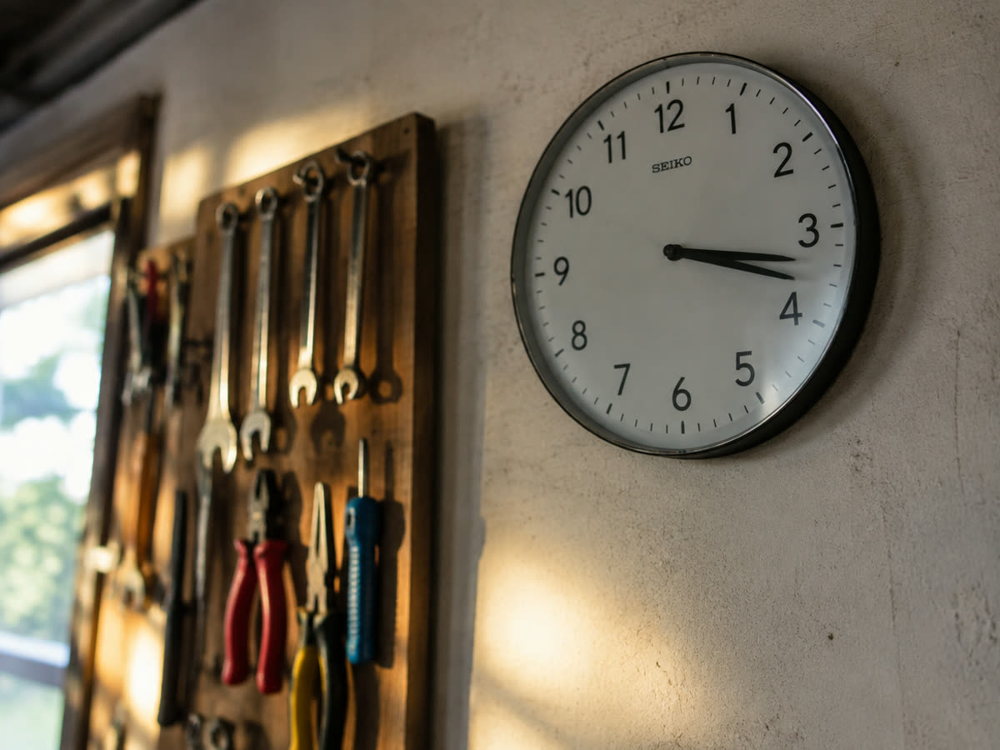

Wann sollte man Reels posten?
Zu kaum einer Frage gibt es mehr Tabellen im Netz. Für Kurzvideo ist ihr Einfluss klein.
Zu kaum einer Frage gibt es mehr Tabellen im Netz: dienstags um 11:00, donnerstags um 19:00, sonntags nie. Für klassische Beiträge hatten solche Zeiten einmal Bedeutung. Für Kurzvideos ist ihr Einfluss klein, und wer seine Energie dort hineinsteckt, optimiert an der falschen Stelle.
Warum die Uhrzeit an Gewicht verloren hat
Ein klassischer Beitrag wurde vor allem den eigenen Followern gezeigt, und zwar kurz nach dem Veröffentlichen. Wer zu einer Zeit postete, in der niemand online war, verlor die wichtigste Stunde.
Kurzvideos werden anders verteilt. Sie laufen über Tage, teilweise über Wochen, und sie werden überwiegend Menschen gezeigt, die dem Profil nicht folgen. Ein Reel kann nach drei Tagen anziehen und nach zwei Wochen noch Aufrufe sammeln. Der Zeitpunkt der Veröffentlichung ist dabei nur der Startpunkt, nicht die Entscheidung.
Das heißt nicht, dass die Uhrzeit egal ist. Es heißt, dass sie weit hinter dem Anfang des Videos, dem Thema und der Regelmäßigkeit rangiert. Siehe dazu Die ersten zwei Sekunden.
Was trotzdem hilft
Die erste Stunde gibt der Plattform ein erstes Signal. Wenn Ihr Publikum gerade wach und am Telefon ist, fällt dieses Signal etwas besser aus. Deshalb lohnt eine grobe Orientierung, nicht aber eine Punktlandung auf die Minute.
Für Betriebe mit Privatkundschaft sind frühmorgens, die Mittagszeit und der Abend zwischen 18 und 21 Uhr brauchbare Fenster. Für Betriebe, deren Kundschaft selbst arbeitet, oft der frühe Morgen und der späte Nachmittag. Und am Wochenende ist mehr los, als die meisten Tabellen behaupten.
Diese Angaben sind Ausgangspunkte, nicht Ergebnisse. Ihr eigenes Publikum ist die einzige verlässliche Quelle.

Wo Ihre eigenen Zahlen stehen
Ein Geschäftskonto zeigt unter den Statistiken, wann Ihre Follower aktiv sind, aufgeschlüsselt nach Wochentag und Stunde. Diese Übersicht ist in zwei Minuten gefunden und schlägt jede allgemeine Empfehlung, weil sie Ihre Leute beschreibt und nicht den Durchschnitt aller.
Wie Sie das Konto umstellen, steht unter Das Profil einrichten. Welche weiteren Zahlen sich darin lohnen, steht unter Welche Zahlen wirklich zählen.
Regelmäßigkeit schlägt Uhrzeit
Wenn Sie zwischen zwei Dingen wählen müssen, wählen Sie Verlässlichkeit. Zwei feste Termine pro Woche, die Sie halten, bringen mehr als die perfekte Uhrzeit, die Sie jede zweite Woche verpassen.
Legen Sie zwei Wochentage fest und bleiben Sie dabei. Das hat zwei Wirkungen: Die Plattform bekommt ein gleichmäßiges Bild von Ihrem Profil, und bei Ihnen wird aus einer Aufgabe eine Gewohnheit. Warum die Menge dabei nicht beliebig klein werden darf, steht unter Wie oft sollte man posten?
Vorplanen statt live posten
Beide Plattformen erlauben es, Videos vorzubereiten und zur gewünschten Zeit automatisch veröffentlichen zu lassen. Damit entkoppeln Sie den Veröffentlichungszeitpunkt vom Arbeitsalltag, und das ist der eigentliche Gewinn: Sie müssen nicht um 19 Uhr am Telefon sitzen, weil eine Tabelle das sagt.
Bei uns gehört der Veröffentlichungsplan zum Umfang dazu, siehe Veröffentlichung und Zahlen. Wenn Sie es abgeben möchten: Erstgespräch buchen.


Lernen wir uns kennen.
15 Minuten am Telefon oder per Video. Danach wissen Sie, ob und wie Social Media für Ihren Betrieb funktioniert.